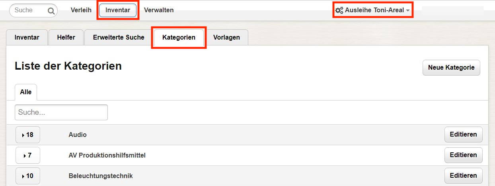

Inventarisieren und Verwalten
Diese Seite betrifft nur Personen, die über die nötigen Berechtigungen verfügen: Inventar-Verwalter. Bitte beachten Sie, dass die Benutzung gewisser Eingabefelder je nach Konfiguration von Leihs (Admin) eingeschränkt ist (z.B. Gebäude).
Geräteparks
Berechtigungen zur Ausleihe von Gegenständen können mithilfe von Geräteparks geregelt werden. Kunden können nur jene Gegenstände ausleihen, die zu einem Gerätepark gehören, für welchen sie freigeschaltet sind. Am Anfang der Inventarisierung eines neuen Gegenstandes steht deshalb immer die Entscheidung, wer zu dessen Ausleihe berechtigt sein soll. Wählen Sie in der Navigationsleiste den passenden Gerätepark und wechseln dann zum Bereich "Inventar".
Gruppen
Gruppen kann ein exklusives Kontingent zugewiesen werden, um spezielle Ansprüche zu regeln. Das Kontingent wird mit Gegenständen aus dem betreffenden Geräteparks gebildet. Kunden, die nicht zur Gruppe gehören, haben darauf keinen Zugriff. Die Zugriffsbeschränkung wird von Leihs mithilfe der Verfügbarkeit gesteuert. Um Gruppen zu bewirtschaften, wählen Sie in der Navigationsleiste den gewünschten Gerätepark, klicken dann auf "Verwalten" und wählen schlussendlich den Reiter "Gruppen".
Kategorien
Gegenstände eines Geräteparks können mithilfe von Kategorien geordnet werden. Kategorien helfen den Kunden, sich im Inventar zu orientieren. Eine Kategorie kann Subkategorien beinhalten. Zur Verwaltung von Kategorien wählen Sie in der Navigationsleiste den gewünschten Gerätepark, klicken dann auf "Inventar" und wechseln schlussendlich zum Reiter "Kategorien".
Modelle
Stellen Sie sicher, dass Sie sich im gewünschten Gerätepark befinden. Suchen Sie das zum neuen Gegenstand passende Modell in Leihs, indem Sie die Suchfunktion in der Navigationsleiste benützen. Wenn dies misslingt, müssen Sie ein neues Modell erfassen. Klicken Sie in der Navigationsleiste auf "Inventar" und bewegen dann den Mauszeiger auf "Inventar hinzufügen". Wählen Sie "Modell" aus. Füllen Sie folgende Felder zweckmässig und aussagekräftig aus:
Füllen Sie folgende Felder zweckmässig und aussagekräftig aus:
- Produkt: Dies ist der Name des Modells. Üblicherweise wird dafür der Gerätetyp gefolgt vom Hersteller und dessen Modellnummer verwendet (z.B. "AVCHD-Kamera Panasonic AG-HMC151").
- Version: Falls relevant, können Sie eine Versionsnummer erfassen.
- Beschreibung: Kurze Erklärungen zum Modell, z.B. "Semi-Professionelle Video-Kamera für ...".
- Hersteller: Leihs schlägt beim Tippen automatisch bereits erfasste Hersteller vor.
- Technische Details: Kennzahlen wie beispielsweise Auflösung, Gewicht, Speicherkapazität, usw.
- Interne Beschreibung: Diese Erklärungen sind für Kunden nicht sichtbar.
- Wichtige Notizen zur Aushändigung: Hinweise zur Aushändigung (z.B. nützliche Optionen).
- Zuteilungen: Kontingentieren Sie eine bestimmte Anzahl Gegenstände des Modells für eine Gruppe.
- Kategorien: Ordnen Sie den neuen Gegenstand passenden Kategorien zu.
- Bilder: Laden Sie ein Foto des Modells hoch.
- Anhänge: Laden Sie Handbücher, Datenblätter o.ä. hoch.
- Zubehör: Erfassen Sie zugehörige Accessoires (z.B. Schutzhülle).
- Ergänzende Modelle: Erfassen Sie bestehende Modelle, die mit dem neuen Modell kompatibel sind (z.B. Mikrofon).
- Eigenschaften: Erfassen Sie wichtige Eigenheiten des neuen Modells (z.B. Aufnahmeformate).
Gegenstände
Stellen Sie sicher, dass das zum neuen Gegenstand passende Modell in Leihs bereits existiert. Klicken Sie in der Navigationsleiste auf "Inventar" und bewegen dann den Mauszeiger auf "Inventar hinzufügen". Wählen Sie "Gegenstand" aus. Überprüfen Sie, ob der automatisch generierte Inventarcode Ihren Erwartungen entspricht (z.B. AUS12345). Füllen Sie dann folgende Felder zweckmässig und aussagekräftig aus:
Überprüfen Sie, ob der automatisch generierte Inventarcode Ihren Erwartungen entspricht (z.B. AUS12345). Füllen Sie dann folgende Felder zweckmässig und aussagekräftig aus:
- Modell: Erfassen Sie ein passendes Modell.
- Verantwortliche Abteilung: Erfassen Sie, welche Abteilung für den Gegenstand verantwortlich sein wird. Die Liste alles möglichen verantwortlichen Abteilungen entspricht der Liste aller Geräteparks in Leihs.
- Benutzer/Verwendung: Benennen Sie, wer den Gegenstand benutzen bzw. welchem Verwendungszweck der Gegenstand dienen wird.
- Seriennummer: Erfassen Sie die Seriennummer des Gegenstands.
- IMEI-Nummer: Falls es sich beim Gegenstand um ein Mobiltelefon handelt, können Sie dessen IMEI-Nummer erfassen.
- Notiz: Erfassen Sie weitere Informationen (z.B. Besonderheiten dieses spezifischen Gegenstands).
- Anhänge: Laden Sie eine Datei hoch, die für den Gegenstand gespeichert werden soll (z.B. Kaufquittung).
- Gebäude: Erfassen Sie das Gebäude, welches für den Gegenstand erfasst werden soll.
- Raum: Erfassen Sie den Raum des Gebäudes, welcher für den Gegenstand erfasst werden soll. Der Raum erscheint auch auf der Rüstliste.
- Gestell: Bei Bedarf können Sie die Ortsangabe des Gegenstandes mit einem Gestell präzisieren (z.B. Lager-Regal). Das Gestell erscheint auch auf der Rüstliste.
- Bezug: Wählen Sie aus, ob der Gegenstand auf "laufende Rechnung" oder als "Investition" beschafft wurde.
- Rechnungsnummer: Erfassen Sie die Nummer der dem Gegenstand zugehörigen Rechnung.
- Rechnungsdatum: Erfassen Sie das Datum der dem Gegenstand zugehörigen Rechnung.
- Anschaffungswert: Erfassen Sie den finanziellen Wert des Gegenstands. Dieser erscheint auch im Werteverzeichnis.
- Lieferant: Erfassen Sie, bei welchem Lieferant der Gegenstand beschafft wurde.
- Garantieablaufdatum: Erfassen Sie, wann die Herstellergarantie abläuft.
Überprüfen Sie alle Angaben auf Korrektheit und bestätigen dann mit einem Klick auf "Gegenstand speichern". Wenn Sie einen weiteren Gegenstand desselben Modells erfassen möchten, bewegen Sie den Mauszeiger auf "Gegenstand speichern" und wählen "Speichern und kopieren" aus.
Optionen
Stellen Sie sicher, dass Sie sich im gewünschten Gerätepark befinden. Klicken Sie in der Navigationsleiste auf "Inventar" und bewegen dann den Mauszeiger auf "Inventar hinzufügen". Wählen Sie "Option" aus.  Füllen Sie folgende Felder aus:
Füllen Sie folgende Felder aus:
- Produkt: Geben Sie an, wie die Option heissen soll (z.B. Adapter USB/RS422)
- Version: Bei Bedarf können Sie eine Version erfassen.
- Preis: Erfassen Sie den Preis der Option.
- Inventarcode: Bei Optionen können Sie den Inventarcode frei wählen.
Inventarhelfer
Mit dem Inventarhelfer können verschiedene Felder für mehrere Gegenstände nacheinander verändert werden. Dies ist beispielsweise bei einer Inventur hilfreich, um den Zustand und das Datum der letzten Inventur für mehrere Gegenstände rationell zu aktualisieren. Stellen Sie zuerst sicher, dass Sie sich im gewünschten Gerätepark befinden. Klicken Sie dann in der Navigationsleiste auf "Inventar" und wechseln zum Reiter "Helfer". Nun können Sie die zu bearbeitenden Felder auswählen und deren Soll-Wert festlegen. Anschliessend suchen Sie die betreffenden Gegenstände nacheinander (bspw. anhand derer Inventarnummer), prüfen die Änderungen und bestätigen mit "Gegenstand editieren".
Rechte ändern
Suchen Sie den betreffenden Benutzer mithilfe der Suchfunktion in der Navigationsleiste. Bewegen Sie den Mauszeiger auf das Dreiecksymbol rechts von "Aushändigen" und klicken dann auf "Editieren".Nun können Sie den Leihs-Zugriff der Person anpassen ("Zugriff als"). Bestätigen Sie mit "Speichern".